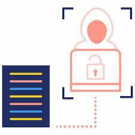

Ethical Hacking tools and methodologies
also known as penetration testing or white-hat hacking, refers
to the practice of deliberately and lawfully exploiting computer
systems and networks to identify security vulnerabilities.
Ethical hackers, often employed by organizations or hired as
independent consultants, use their knowledge and skills to
assess and improve the security posture of systems.
-
Hacking tools
Reconnaissance Tools: These tools help gather information about the target system or network. Examples include Nmap, Shodan, and Recon-ng.
Scanning Tools: Scanning tools are used to identify open ports, services, and vulnerabilities on target systems. Popular tools include Nessus, OpenVAS, and Nexpose.
Exploitation Tools: These tools are used to exploit identified vulnerabilities in systems or applications. Metasploit Framework, Burp Suite, and Core Impact are widely used for this purpose.
Password Cracking Tools: These tools attempt to crack or guess passwords to gain unauthorized access. Popular examples include John the Ripper, Hashcat, and Hydra.
Wireless Hacking Tools: These tools are specific to wireless networks and help assess their security. Aircrack-ng, Kismet, and Wireshark are commonly used in wireless hacking. -

Methodologies
Reconnaissance: Gather information about the target system or network using various techniques, such as open-source intelligence (OSINT), network scanning, and social engineering.
Scanning: Identify open ports, services, and potential vulnerabilities using tools like Nmap and vulnerability scanners.
Enumeration: Gather information about user accounts, system configurations, and network resources to better understand the target environment.
Exploitation: Attempt to exploit identified vulnerabilities using tools like Metasploit or by manually crafting and executing exploits.
Post-Exploitation: Once access is gained, ethical hackers explore the compromised system/network further, escalate privileges, and maintain persistence to evaluate the extent of potential damage.
Reporting: Document findings, vulnerabilities, and recommendations for improving security. A comprehensive report is provided to the organization, including steps to mitigate identified risks.
It's important to note that the specific tools and methodologies used can vary depending on the target environment, the scope of engagement, and the expertise of the ethical hacker. -

Responsible disclosure
is a crucial aspect of ethical hacking and cybersecurity in general. It refers to the practice of reporting identified vulnerabilities or security weaknesses to the appropriate stakeholders, such as the organization or vendor responsible for the affected system, before disclosing them publicly or to malicious actors. Here are some key reasons why responsible disclosure is important:
Protecting Users and Organizations: By responsibly disclosing vulnerabilities, ethical hackers help protect users and organizations from potential attacks. Promptly notifying the affected parties allows them to take action, such as developing and deploying patches or implementing other mitigations, to safeguard their systems and data.
Giving Organizations Time to Remediate: Responsible disclosure gives organizations a reasonable amount of time to address the identified vulnerabilities. This ensures that patches or fixes can be developed and tested thoroughly before being made available to the public. It helps prevent a race between ethical hackers and malicious actors, reducing the likelihood of widespread exploitation.
Preserving Trust and Reputation: When vulnerabilities are disclosed responsibly, it demonstrates the ethical hacker's commitment to the security community and the well-being of users. Organizations appreciate responsible disclosure as it allows them to take appropriate action without undue harm to their reputation. This encourages a collaborative approach between security researchers and organizations, fostering a stronger and more trustworthy cybersecurity ecosystem.
Legal Compliance: Responsible disclosure helps ethical hackers adhere to legal and regulatory requirements. Unauthorized exploitation or public disclosure of vulnerabilities without prior consent can lead to legal consequences. By following responsible disclosure practices, ethical hackers stay within the legal boundaries while still contributing to security improvement efforts.
Encouraging Vulnerability Reporting: Responsible disclosure encourages other security researchers to report vulnerabilities they discover. If researchers see that organizations handle vulnerabilities responsibly, provide timely fixes, and appreciate the contributions of the security community, they are more likely to report vulnerabilities they find. This promotes a proactive security culture and helps in identifying and resolving vulnerabilities before they are exploited by malicious actors.
Collaboration and Knowledge Sharing: Responsible disclosure promotes collaboration and knowledge sharing between ethical hackers, organizations, and the wider cybersecurity community. By sharing information about vulnerabilities and their remediation, the collective understanding of security issues is improved, leading to better protection against evolving threats.
Overall, responsible disclosure strikes a balance between the need for security and the potential harm that can arise from immediate public disclosure. It allows ethical hackers to contribute to a safer digital environment while giving organizations the opportunity to address vulnerabilities effectively.